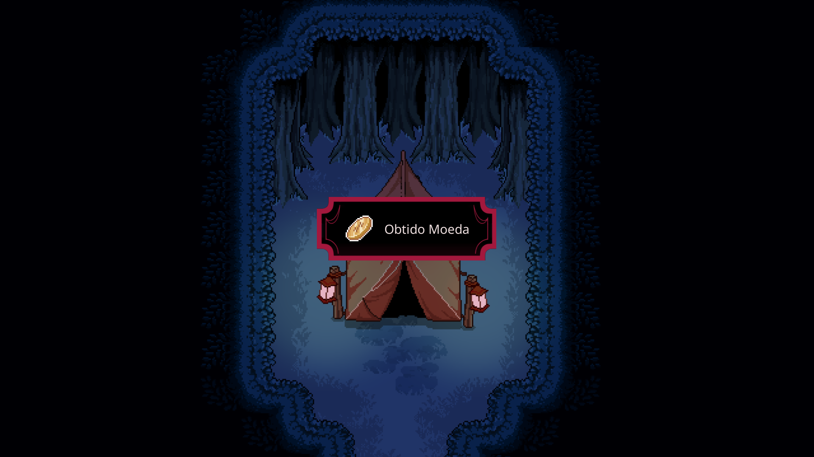
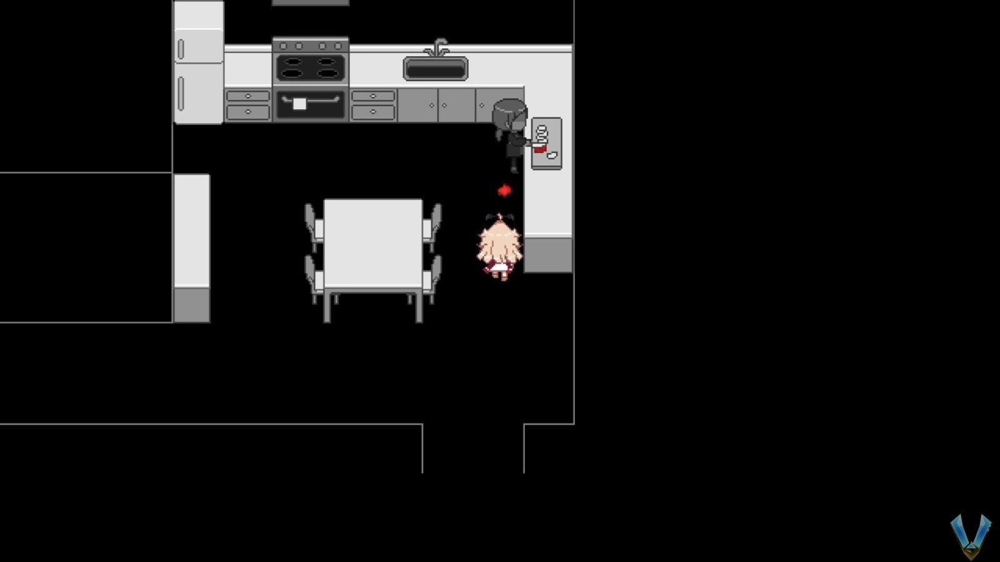

Explore a Beira do Lago
Chegando na nova área após todo aquele pecurso, vá para o barco à direita.
Este monstro está nos impedindo de usar o barco, e precisamos dele para chegar à próxima parte do jogo. Há 2 coisas que podemos fazer aqui: dar-lhe algo para comer, ou usar água para tirá-lo do caminho. Claro que vou ensinar os dois, mas estamos usando o método da água porque queremos um item.
Dito isso, do píer vá para o norte e você notará um buraco no chão à sua direita. Aproxime-se e enfie a mão lá dentro, se quiser. Não tem nada. Siga para a esquerda para chegar ao cais no lago real. Ao ir para a esquerda, observe o Barco Remar entre as rochas. Vá em frente e pegue-o.
Siga mais à esquerda e você notará um pequeno gazebo. Você pode ver a estrutura semelhante a um castelo à distância, se quiser, mas você vai querer pegar as pétalas roxas na parte inferior aqui.
Volte para a área principal e você deve ter notado coelhos correndo. Persiga eles e você notará que eles se transformam em poças de sangue se você chegar perto. Esquisito. Há um coelho que é mais lento do que os outros. Persiga este e pegue-o para obter Coelho ferido.
A entrada pelo lado oeste, volte por aqui e siga todo o caminho à esquerda até chegar à árvore. Interaja com as folhas no chão para receber pétalas brancas.

Voltando para a área principal e para o sul você pode encontrar uma vara de pesca, um balde e uma gaiola amarrada a uma árvore. Comece pegando o balde. Vamos precisar dele para jogar água no monstro
Agora use a vara de pescar. Tem exatamente o mesmo minigame que tivemos quando o Prisioneiro estava tentando nos matar. Claro que nada vai nos matar aqui para você errar quantas vezes quiser. Há um monte de coisas para chegar aqui e tudo isso é aleatório:
Moeda
Algas Negras
Algas Verdes
Algas Azuis
Claro que a moeda é o que você quer obter, mas note que existem 3 tipos de algas. Vamos precisar de um delas para conseguir a água que precisamos. Dito isso, a cor das algas que precisamos é aleatória, então sinta-se livre para pular isso até aprendermos que tipo de algas precisamos.
Quanto à gaiola, é aqui que colocamos o coelho que capturamos e o baixamos na água para que o monstro o coma. Vamos querer levar o coelhinho com a gente, então NÃO faça isso!
À direita temos uma bifurcação no caminho. Indo para o sul leva à entrada/saída para a Floresta Escura. Não queremos ir para lá. No entanto, vá um pouco para o sul e siga a borda da água deixada (atrás das árvores) para encontrar outro buraco no chão. Enfie a mão neste para encontrar uma Runa.
Volte e agora vá para o leste através da ponte e entre na próxima área.
Aqui dentro temos uma pequena lagoa com uma pequena casa no meio dela. Comece pegando o remo do barco no lado esquerdo.
Agora confira as flores na lagoa para encontrar pétalas cor-de-rosa.
Se você olhar para o lado direito, você pode encontrar uma torneira. Localização muito estranha para um. Precisamos usar a torneira para encher o balde, mas ela está entupido, então precisamos limpá-la primeiro. Siga para dentro do casinha.
Dentro da casa você encontrará um peixinho dourado em um aquário. NÃO LEVE O PEIXE!
Aviso de Final
Este é um final rápido, então certifique-se de salvar seu jogo antes.
Dentro da casa você encontrará um peixinho dourado em um aquário. Pegue-o para ouvir um barulho. Algo definitivamente não está certo. Assim que o fizer, dirija-se para fora e a água está toda vermelha. Volte para a tela anterior e... É, é tudo vermelho. Todas as saídas estão bloqueadas, então passe por toda a área e tente ir para o lago no canto superior esquerdo da área. Pois é, até aqui está bloqueado
No caminho, você verá todos os coelhos mortos. São todos vermelhos também! Volte para a ponte e você verá um coelho branco que não estava lá antes. Pegue-o... e aproveite o final!
Com esse fim fora do caminho, verifique os papéis no chão no canto e ele diz que o "pequeno guardião" limpará os canos se você lhe trouxer pétalas e algas. Sim, é aqui que queremos usar as pétalas e algas que reunimos. Se você tem acompanhado, então você já tem todos os tipos de pétalas e algas (a menos que você decidiu esperar nas algas).
Preste muita atenção em qual cor de pétala e algas você precisa e use-as como itens na frente do peixinho. Não sei se tem que estar em ordem (pétalas depois algas), mas fiz assim.
Depois de usar os dois itens, volte para fora e ligue a torneira do lado direito. A água está finalmente saindo! Vá em frente e use o balde para obter Balde de Água Especial.
E com isso estamos prontos para deixar este lugar! Apenas certifique-se de obter a Runa do buraco no lado inferior da área. Depois de fazer isso e quando estiver pronto, aproxime-se do barco e use o balde com água especial no monstro para tirá-lo do caminho. Agora use o barco e pronto! Estaremos na segunda parte da "Beira do Lago", é bem curto na verdade.
Assim que descermos, salve seu jogo e siga para o norte. Você chegará a uma árvore cercada por um ramo de flores. Interaja com qualquer um deles para obter Flor de Lavanda. Vá em frente e pegue-a. Além disso, certifique-se de verificar o canto superior direito para encontrar uma moeda.
Com os dois itens no bolso, cabeça direita para alcançar uma porta que tem 2 maçanetas e 4 furos. Podemos ter 6 maçanetas aqui? Enfim, vamos fazer as coisas em ordem, vamos? Para começar, olhe para as 2 maçanetas que já estão na porta. Comece usando o laranja no canto inferior esquerdo.
Uma vez que você fizer isso, você vai passar pela porta e aparecer em algum lugar. Siga em frente para encontrar uma tenda. Antes de entrar, verifique atrás da tenda para encontrar uma moeda
Dirija-se para dentro da tenda para encontrar um par de irmãos mariposas. Eles vão pedir para você matar seu irmão, uma lagarta. Quando perguntado, responda com eu vou cuidar disso. Com isso você obterá a lagarta. Depois, NÃO o mate.
Agora, com a lagarta no bolso, antes de sair aproxime-se da traça branca e use a lavanda que ganhamos recentemente. Eles não gostam e nos darão nossa recompensa por matar a lagarta sem a necessidade de fazê-lo, uma maçaneta com olho
Volte para a porta com as maçanetas e agora gire a roxa do lado esquerdo.
Isso nos levará a uma loja de algum tipo. Vá em frente e fale com a garota das sombras e ela lhe dará uma Poção do Arco-Íris. Isso aumenta sua saúde em 1. Praticamente usado para minigames. Depois, abra seu inventário e dê a ela o Coelho Ferido que recebemos de volta no início deste ato, bem como a Lagarta que acabamos de receber. Se você tem o Jarro com Vagalumes da floresta, ou a Lâmpada com Vagalumes, sinta-se à vontade para também dá-lo a ela. A garota das sombras ficará feliz, mas nada acontecerá.
Nota do autor
Pelo que li nos fóruns, dar a ela o coelhinho vai alterar um pouco o final real. Não tenho 100% de certeza, mas é melhor fazermos!
Vá em frente e volte para a porta principal e pare. Para prosseguir para a próxima área do jogo (penúltima) precisamos usar a maçaneta com olho que recebemos dos irmãos mariposas. No entanto, temos mais 2 maçanetas com a gente. Deixe-me falar sobre elas muito rápido:
Maçaneta com Flor: Esta é a que temos quando saímos da Floresta Escura. Você pode ou não tê-lo dependendo da rota que você fez para chegar a Beira do Lago. Usando esta maçaneta leva você a uma pequena área onde você vê uma sepultura. Este parece ser o amigo da pessoa que deixou o rastro da pétala de flores na Floresta Sombria.
Maçaneta do retorno: Temos isso conosco desde o início e é o caminho de volta para casa. Você pode usá-lo aqui para entrar em uma sala iluminada onde você pode interagir com o lírio na panela e fazer seu próprio lírio. Ao fazer isso, Lacie voltará ao "mundo real" e voltará para casa. Isso vai acabar com o jogo, já que nada foi feito, e não é considerado um final porque que graça teria só isso?
Ambos são boas de conferir, mas o que você vai querer fazer é usar a maçaneta com olho. Coloque-o em qualquer um dos buracos e vire-o para revelar uma escada, uma cena, então estaremos no mundo dos sonhos mais uma vez.

Assim que acordarmos, comece indo para o sul e subindo as escadas. As escadas que vão para o sul do nada ainda estão lá. No entanto, note que há uma escada vermelha também. Sinta-se livre para descer esta escada, mas você verá que ela está incompleta/quebrada.
Por enquanto, volte para cima e vá para o canto noroeste até a porta... Existem 2 portas agora. Entre na da direita para chegar à cozinha da sua casa? Aqui vemos a mãe de Lacie. Ela nos pede uma faca.
Siga para o sul na garagem e verifique os guarda-roupas até desmaiar. Ao fazer isso, você vai "acordar" na cozinha com a faca. Como isso aconteceu? De qualquer forma, dê a faca para sua mãe e você verá que ela cortará algo vermelho. Pegue-o no chão para obter o Item Vermelho II.
Volte para a garagem para encontrar um guarda-roupa. Abrindo ele você vai voltar e na próxima área.

Menu
Finais